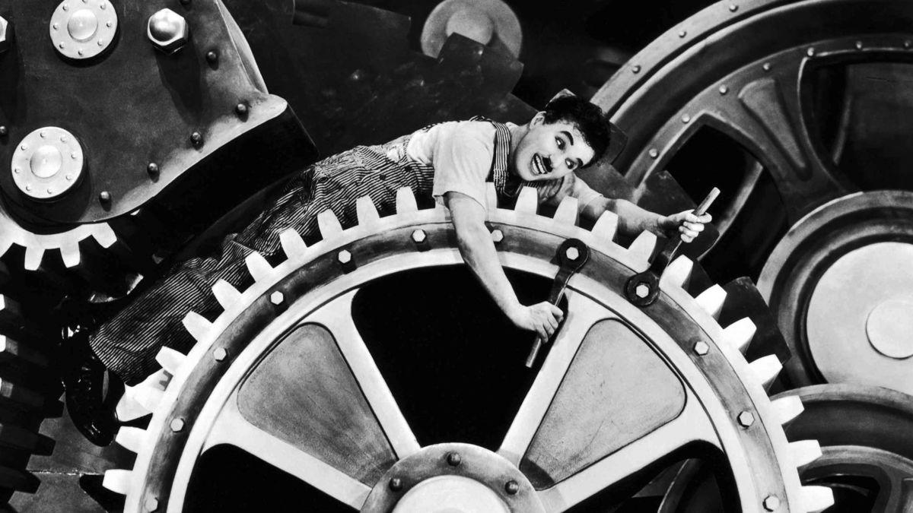

tags: cultural evolution, systemic
7 min read

We tend to divide up human history into relatively neat periods, and give them names like “The Agrarian Era,” “The Age of Industrialization” and “The Information Age.”
When I look at what's going on around me today and try to make sense of it, I am forced to draw the conclusion that we are deep into an as yet unnamed age that I would call “The Systemic Era.” What I mean by this is that we are now at a point where the human condition is much more influenced by vast social and economic systems of our own collective making than by any natural forces or conditions, or any individual actions we might take, or even any individual intentions we might have.
Probably the best example of this is global warming – the condition of increasing world temperatures and climatic instability caused by rising human population levels and human activities. But just as good an example was our global financial meltdown, and the controversial actions taken to prevent the failures of specific institutions from spreading and bringing down our entire credit system.
The problem of sudden, uncontrolled and unprovoked acceleration in Toyota's Prius model was another typical tale of the Systemic Era. Here we have a bunch of affluent, well-meaning, environmentally conscious consumers (if we dare to characterize Prius owners as such) being terrorized by the prospects of the cars they are so proud of suddenly tearing off down the road and smashing into something. And the cause of this errant automotive behavior? A glitch in the car's software system, perhaps. Or a breakdown in Toyota's quality system. Or a failure of our automotive testing system. But whatever is causing it, it certainly isn't something that you can go out into your driveway and fix with a wrench or a screwdriver, even after a heart-to-heart talk with Tom and Ray of Car Talk fame.
Yet another example is the aftermath of the earthquake in Haiti. At first, global attention focused on the natural disaster and relief efforts to help residents recover from the effects of the quake. But as the world's consciousness of Haiti's situation grew, it became increasingly clear that there was no desirable previous state to which we could help them return; there was nothing of worth to help them rebuild; and, in fact, the deeper problems from which Haitians were suffering – both before and after the earthquake – were systemic problems resulting from poor economic and social policies, problems that have been decades in the making. And so the growing horror for the rest of the world was not so much the natural disaster and effects it had, but the fact that it had taken a natural disaster of this magnitude to draw our attention to a larger problem that had been there all along, and that we had been ignoring and – even worse – really had no clue how to solve.
The preeminent corporate identity in the Systemic Era is Apple, Inc., no longer a purveyor of computers (they changed their name to remove that word in 2007) or even of independent, isolated consumer devices, but architects of interconnected systems, consisting of server, desktop and mobile hardware, operating systems, application suites, its iTunes store and App Store, streams of digital media from content providers, and global, omnipresent network connections making use of both the Internet and digital cellular networks. For while products such as the iPod, the iPhone and the iPad appear to be desirable objects in their own rights, their individual form and styling are in some ways like the gestures of a magician, meant to delight and amaze, but also to draw attention away from the trick itself, which in this case is the System that includes and transcends the particular device and which is the real source of value to the consumer and of increasing wealth to Apple's investors. And then, of course, Apple is also the most self-aware of its corporate influence in the Systemic Era, evidenced as far back as 1983, when Steve Jobs lured CEO John Sculley away from Pepsi-Cola by famously asking, “Do you want to sell sugar water for the rest of your life, or do you want to come with me and change the world?”
So having provided numerous examples of what I am calling the Systemic Era, let me enumerate what I see as the distinctive attributes of this age.
So what are some of the practical implications of all this for us, as global citizens? Primarily, I think, that we should reject and see beyond some of the false contradictions continually being offered to us by the media and many of our political spokespeople.
First, we must realize that most of the political sentiments we hear voiced today, from the right or from the left, are overly simplistic requests for us to attempt to return some idyllic past time, and that the most pressing political reality today is for us to accept the difficulty and complexity of the time in which we actually live, and to decide how to move forward from this point.
Second, the desire to identify particular heroes and villains in the unfolding story of the 21st century is mostly a misguided waste of energy. It is not the individual actors and their behavior that deserve our condemnation or approbation, but rather the global human systems – collectively created, owned and operated – that have allowed or encouraged such behavior. It is on these systems themselves, and their architects – and not the players within the systems – that we need to focus our attention.
Third, the continued, strident debate over whether we should have small government or big government misses the point. A small government will exercise too little control over the systems that determine our conditions, and leave these systems to be manipulated by selfish commercial interests. So some sort of big government is a necessity. But the big government we need should proactively and intelligently engineer these systems so as to motivate individual actors to contribute to our common good – not act as a major player itself within these systems.
Make no mistake, the Systemic Era is upon us – even though we may not see it trumpeted as such on the front pages of newspapers and Web sites, nor on the lips of media pundits, talk show hosts, and news commentators. Our only choice is whether we shall embrace such knowledge and use it to intelligently fashion the systems that we live under, or whether we shall leave it to other forces to determine our collective human fate.